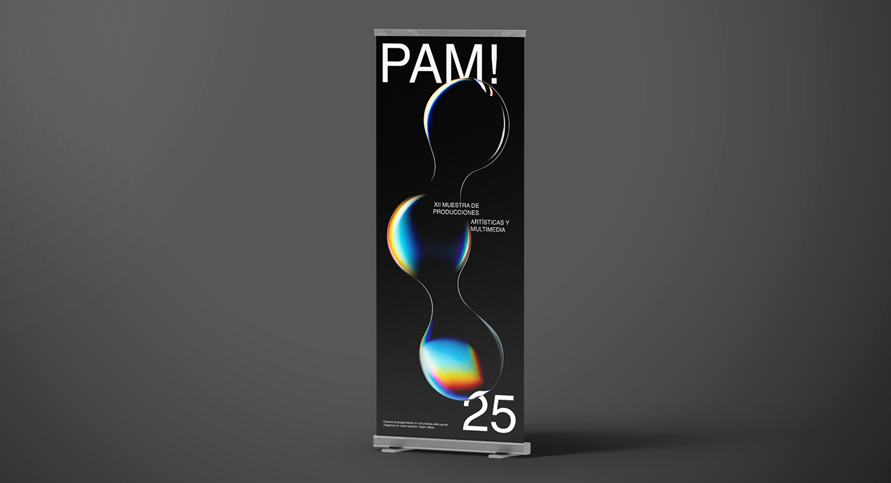
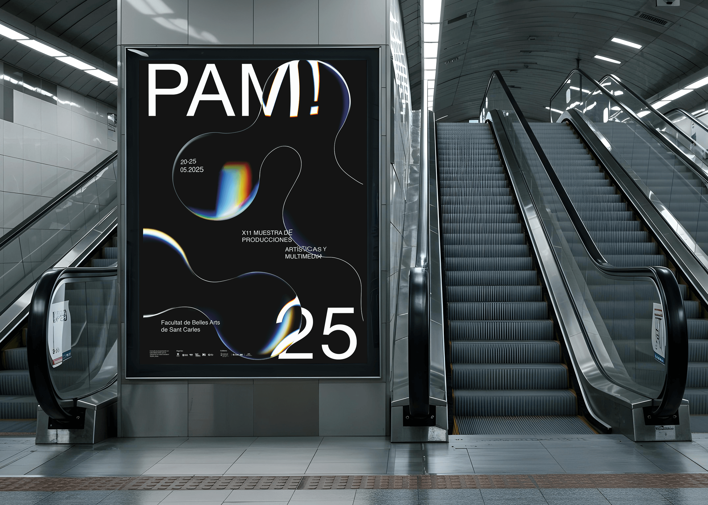
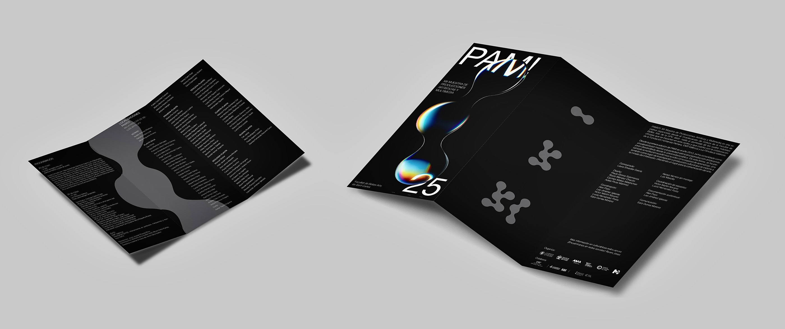
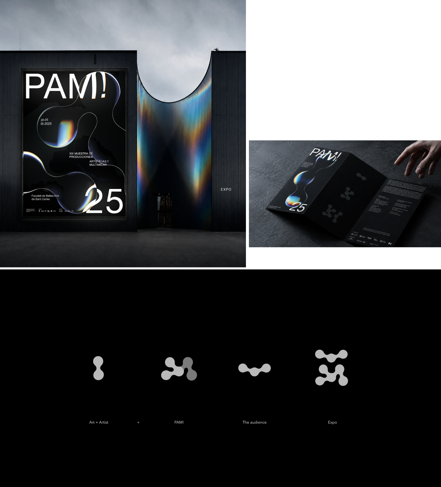
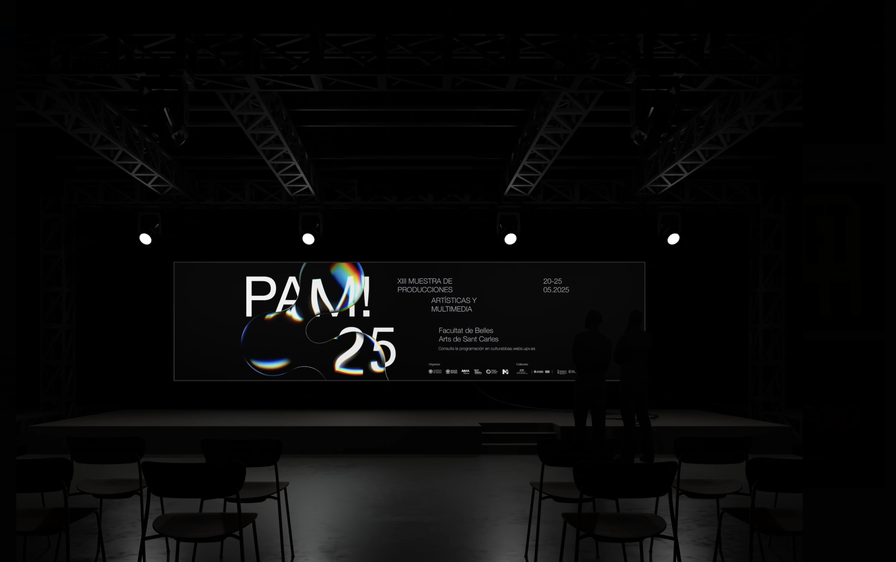
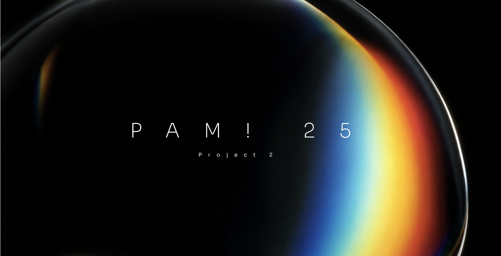

PAM
2026
Brand Identity & Visual Design
Brand Identity / Graphic Design / Art Direction
Visual identity and graphic system exploration.
Role: Designer & Art Director.
OVERVIEW
PAM! is an annual art exhibition organised by the Faculty of Fine Arts at UPV in Valencia, transforming the faculty into an exhibition space for emerging artists. For its 2025 edition, our challenge as design students was to create a visual identity that would represent the event and celebrate the artists behind it.
THE IDEA
I wanted the identity to communicate what PAM! is really about: bringing artists, their work and the public together. Instead of representing this literally, I developed a modular visual system built around three symbolic elements.
It begins with two spheres representing the artist and their work. Three additional spheres then join the composition, symbolising PAM! as the connection between them. Finally, a separate shape wraps around the composition, representing the audience and completing the relationship.
BRINGING THE CONCEPT TO LIFE
Once I had established the visual system, I wanted to give the shapes a more experimental, almost sculptural appearance. I created the illustrations entirely in Photoshop, experimenting with transparency, light and textures to give the forms a translucent finish.
The modular system allowed me to play with different compositions while maintaining a recognisable identity. I liked the idea that the shapes could interact and rearrange themselves, just as the people involved in PAM! come together through art.
FINAL RESULT
I applied the identity across a series of formats, including an exhibition poster, social media banners, digital content and merchandise such as a T-shirt and tote bag.
One of the challenges was adapting the design to single-ink printing for the merchandise, while preserving the personality of the original illustrations.
What I especially like about this project is that the identity is more than a collection of abstract shapes. Every element has a reason to exist, and together they visually tell the story of what PAM! makes possible: connecting people through art.





